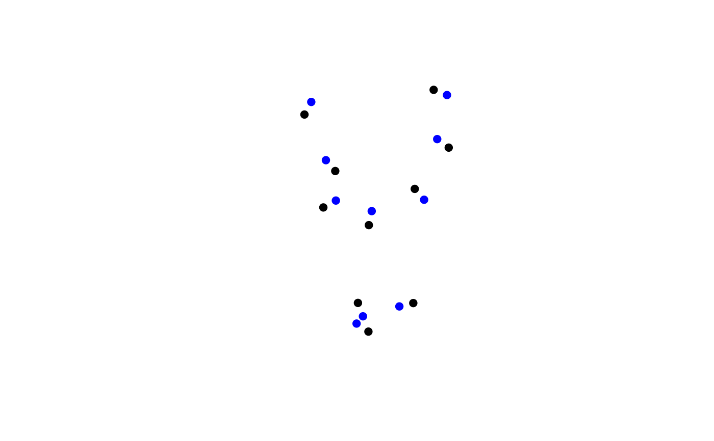

Wrapper for selecting different animal movement methods.
This version uses just turn angles and step lengths to define the correlated random walk.
move(hypothesis = "crw", ...)
crw(
agent,
extent,
stepLength,
stddev,
lonlat = FALSE,
torus = FALSE,
returnMatrix = FALSE
)Character vector, length one, indicating which movement
hypothesis/method to test/use. Currently defaults to
'crw' (correlated random walk) using crw.
arguments passed to the function in hypothesis
A SpatVector points geometry or a SpatialPoints* (deprecated) object.
If is has attributes, e.g., SpatialPointsDataFrame,
2 of the columns must
be x1 and y1, indicating the previous location.
If it does not have these columns as attributes, x1 and
y1 will be assigned randomly.
An optional Extent object that will be used for torus.
Numeric vector of length 1 or number of agents describing step length.
Numeric vector of length 1 or number of agents describing standard deviation of wrapped normal turn angles.
Logical. If TRUE, coordinates should be in degrees.
If FALSE coordinates represent planar ('Euclidean')
space (e.g. units of meters)
Logical. Should the movement be wrapped to the opposite
side of the map, as determined by the extent argument.
Default FALSE.
If TRUE then the return object will be a matrix. This will
be MUCH faster than retaining the sp or SpatVector class,
and thus will be much more effective for iterative crw calls
A SpatVector points object with updated spatial position defined
by a single occurrence of step length(s) and turn angle(s).
This simple version of a correlated random walk is largely the version that was presented in Turchin 1998, but it was also used with bias modifications in McIntire, Schultz, Crone 2007.
Turchin, P. 1998. Quantitative analysis of movement: measuring and modeling population redistribution in animals and plants. Sinauer Associates, Sunderland, MA.
McIntire, E. J. B., C. B. Schultz, and E. E. Crone. 2007. Designing a network for butterfly habitat restoration: where individuals, populations and landscapes interact. Journal of Applied Ecology 44:725-736.
origDTThreads <- data.table::setDTthreads(2L)
origNcpus <- options(Ncpus = 2L)
# using just matrix
N <- 10
xrange <- yrange <- c(-50, 50)
starts <- cbind(x = stats::runif(N, xrange[1], xrange[2]),
y = stats::runif(N, yrange[1], yrange[2]))
moved <- crw(starts, stepLength = 5, stddev = 10)
plot(starts, col = rainbow(10), pch = 19)
points(moved, col = rainbow(10))
# as SpatVector
agent <- terra::vect(starts)
moved <- crw(agent, stepLength = 5, stddev = 10)
movedAgain <- crw(moved, stepLength = 5, stddev = 10)
terra::plot(agent)
terra::plot(moved, add = TRUE, col = "red")
terra::plot(movedAgain, add = TRUE, col = "green")
# 1000x faster!! -- returnMatrix = TRUE
agentOrig <- agent
reps <- 1e2
system.time({
for (i in 1:reps) agent <- crw(agent, stepLength = 5, stddev = 10, returnMatrix = TRUE)
})
#> user system elapsed
#> 0.008 0.000 0.007
agent <- agentOrig
system.time({
for (i in 1:reps) agent <- crw(agent, stepLength = 5, stddev = 10)
})
#> user system elapsed
#> 1.164 0.000 1.164
# as sp
if (requireNamespace("sp")) {
agent <- sp::SpatialPoints(starts)
spdf <- crw(agent, stepLength = 5, stddev = 10)
spdfNew <- crw(spdf, stepLength = 5, stddev = 10)
terra::plot(spdf, pch = 19)
terra::points(spdfNew, col = "blue", pch = 19)
}
#> agent does not have columns named x1 and y1, which represent the 'previous' locations. Assigning random values to those columns.
#> agent does not have columns named x1 and y1, which represent the 'previous' locations. Assigning random values to those columns.

# clean up
data.table::setDTthreads(origDTThreads)
options(Ncpus = origNcpus)